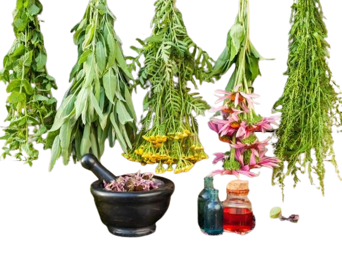

"Nature itself is
the best physician"

HOLY BASIL( Tulsi )
Tulsi is recommended as a treatment for a range of conditions including anxiety, cough, asthma, diarrhea, fever, dysentery, arthritis, eye diseases, otalgia, indigestion, hiccups, vomiting, gastric, cardiac and genitourinary disorders, back pain, skin diseases, ringworm, insect, snake and scorpion bites and malaria

ALOE-VERA
This plant-based remedy contains chemicals that reduce swelling in the skin, relieve redness and scaling, soothe itchy skin, and promote the growth of new skin cells. These properties make aloe vera useful for treating skin conditions such as Acne Cold sores (herpes) Cuts and scrapes Insect bites and stings Minor burns and sunburn Psoriasis

Ashwagandha
Anxiety.Taking ashwagandha by mouth might reduce anxiety.A type of persistent anxiety marked by exaggerated worry and tension.Taking ashwagandha by mouth seems to improve anxiety in people with persistent anxiety.Insomnia.It improve overall sleep and sleep quality in some people.Stress.It help reduce stress in some people. It might also help reduce stress-related weight gain.

Azadirachta indica( Neem )
Benefits &Medical uses-
1. Leprosy
2. Eye disorders
3. Bloody nose
4. Intestinal worms
5. Stomach upset, loss of appetite
6. Skin ulcers
7. Diseases of the heart and blood vessels
8. Fever, diabetes
9. Gum Diseases

Ficus religiosa( Peeple )
BenefitsandMedicinaluses-
• The bark of the Peepal plant and its ripe fruits are helpful for treating asthma.
• For poor appetite.
• For stomach pain.
• For eczema and itching.
• For a brighter complexion.
• For cracked heels.
• For toothache.
• For eye pain>

Hibiscus
Benefits and medical uses-
1. Heart & Nerve diseases
2. Urinary problems
3. Constipation
4. Cancer
5. Liver diseases
6. Cold
7. Skin and hair health
8. Heal wounds
9. Antibacterial & vermifuge
10. Kidney problems
11. Hair health
12. Treatment of painful menstruation

Murrayakoenigii( Curry Leaf)
Benefits & Medical uses-
1. Anemia
2. Diabetes
3. Improve digestion
4. Lowers cholesterol
5. Prevents greying hair
6. Antioxidant
7. Heal wounds & Burns
8. Lose weight
9. Morning sickness & Nausea
10. Eyesight
11. Memory
12. Hair growth

Santalum album ( Chandan )
Benefits & Medical uses-
1. Antiseptic
2. Antipruritic
3. Fever
4. Indigestion
5. Skin diseases
6. Diuretic
7. Bronchitis
8. Gonorrhea
9. Ulcers
10. Urinary track problems
11. Thristcystis
12. Biliousness

Mimosa pudica(Touch me not)
Benefits and medical uses-
1. Antibacterial
2. Anti venom
3. Anti fertility
4. Anti-convulsant
5. Anti-depressant
6. Urogenital disorders
7. Piles
8. Dysentery
9. Sinus
10. wounds

Musa paradisica(Banana)
Benefits and medical uses-
1. Constipation
2. Diarrhea & dysentery
3. Heal intestinal ulcers
4. Nutrition
5. Dissolving the stones in kidney & urinary bladder
6. Reducing the weight
7. Reduce worms problems in the kids
8. Diabetes
9. Hypertension
10. Cancer
11. Alzheimer

Rosa centifolia(Rose)
Benefits and medical uses-
1. Anti inflammatory
2. Cardiac tonic
3. Refrigerant
4. Analgesic
5. Anti anxiety
6. Anti spasmodic
7. Sciatica
8. Cut & wounds to stop bleedingr

Psidium guava(Guava)
Benefits and medical uses-
1. Lower blood sugar levels
2. Boost heart health
3. Menstrual pain
4. Digestive problems
5. Weight loss
6. Anti cancer
7. Boost immunity
8. Good for skin